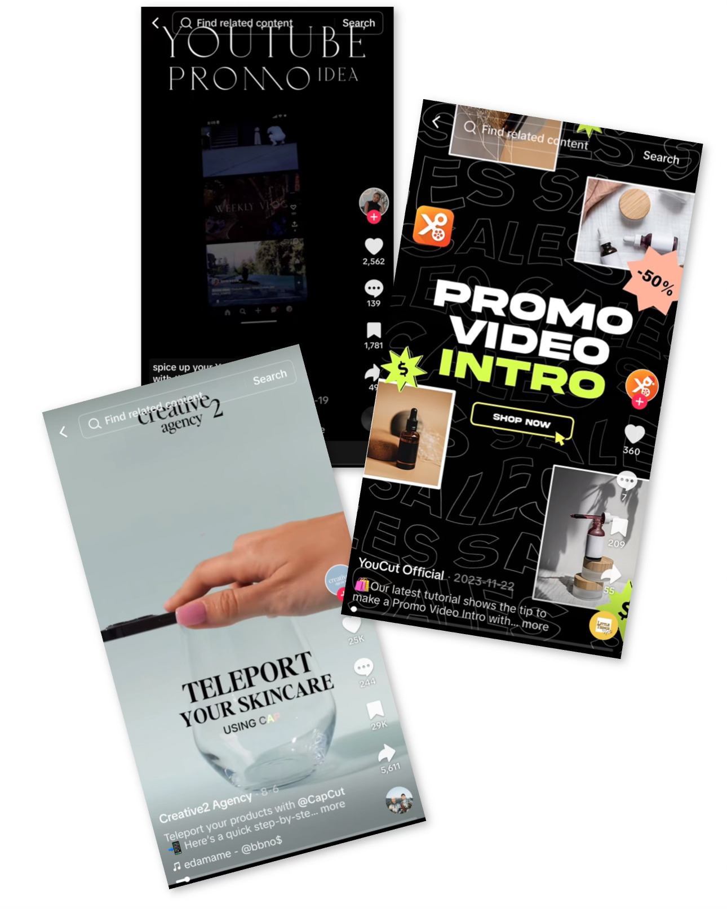

Interactive Media Products
figma prototypes / promo video / instagram design

Portfolio Figma Prototype
My first idea for my portfolio was to make floating bubbles so I created one in Canva. I showed it to my teacher, Stan, who gave me a couple of ideas and helped me visualize them. We both decided that the bubbles aren’t what I was looking for.
The final design I would like to stick to is pink-themed with my favorite type of flower. I added my own signature, with the help of Stan, on the homepage to give more of a personal meaning to my portfolio. My goal is to add butterflies that fly around the screen and flowers that slightly open and close as well.
After getting feedback from two of my teachers about my portfolio design, they mentioned that the flowers were too distracting and took attention away from my name. They said it looked more like a flower shop than a portfolio, and I completely agreed. Their feedback was really helpful because they noticed something I hadn’t seen before, which is why getting a second opinion is so important.
To fix this, I decided to blur the flowers on the homepage so my name stands out more. I also went with the first design, where the flowers are on the sides, to make sure my name stays the main focus.
I gave my website to two people so they user test it, and tell me what I was missing or what they expected. The first person told me that the nav bar was missing something and it could really use a design or some type of interaction. He couldn’t give me a specific idea in mind, but I came up with a vision that when the nav bar is hovered over it glows. I tried with multiple colors and thicknesses but I ended up sticking with a simple white thin glow.
The second person I user tested told me that an “about the portfolio” would be very useful. I added it after the “about me” section, I explained what all the elements in my website mean to me. I saw it as an introduction to my portfolio.
Nasmak Figma Prototype

In the development project, my group member Miya and I created a website for the band Nasmak and their Dance Night event.
My initial idea was to feature a picture of all the band members together and handwrite their band’s name. I decided to make the background black and white, with the name in a bright neon purple or green. I liked how it turned out, but I wanted to try something more extravagant.
To gather inspiration, I looked at a variety of band websites across different genres, focusing mainly on post-punk. I also explored some currently trending artists and eventually stopped at Travis Scott. I loved how his website allowed you to scroll through his albums with a moving background. I wanted to include something similar.
However, since this website was specifically for a one-time event, I couldn’t use all of Nasmak’s albums because it would feel more like a general band website rather than one for the concert.
Instead, I decided to focus only on Nasmak’s song covers that would be featured at the event.
I wanted to ensure that when users opened the website, the band’s name was the first thing they saw, even before learning about the event.
I searched for inspiration on Dribbble but couldn’t find anything that stood out to me. Then I moved to Pinterest, where I explored different ideas, hoping to stumble upon the perfect design.
Finally, I found a few concepts that I liked, which I combined into my own design. I added the first and last letters of "Nasmak" and hid the middle letters, creating a subtle, layered effect that gave the impression of the name being tucked into the background.
Photobooth Paper Prototype
The photobooth idea for the Nasmak project was entirely my teammate Miya’s concept.
She came up with the idea of creating a photobooth where fans attending the band’s events could take pictures, not only with their friends but also with the band members themselves.
I suggested creating some type of physical prototype to give Toon a clearer impression of Miya’s vision.
To gather inspiration, I turned to Pinterest and TikTok, as these are two of the most popular platforms for today’s generation to find and share creative ideas and designs.
I recreated a few of the photobooth designs I came across the most.
For the prototype, we used the open area on the first floor in R10 and asked some students from the Pulsed area if we could borrow their materials. They agreed, and we got straight to work.
I liked how it turned out, but if I were to do it again, I’d focus more on aligning the photobooth’s color pattern with the website we created for band. That way, the photobooth would have a more organized and a Nasmak-inspired style.
Promo Video
After being assigned to work on the promo video, I started researching what it is exactly. I searched on Google to see what the general description is, so the vision in my head clears up.
After that, I searched on Pinterest, because it is a well-known source for designs and others, but unfortunately, I didn’t find many ideas there, and therefore I moved to TikTok and Instagram.
TikTok was more helpful for me because there were a lot of tutorials, explanations, and just promo videos in general.
I noticed that they use something that would grab your attention in the beginning.
I also noticed that the main focus was to not look like an ad, so people don’t automatically skip.
I started off with an idea of just someone holding a phone, and on its screen, it promotes our project.
I found a green-screen phone video, worked with CapCut and InShot, and made a lot of changes because, once in a while, I didn’t like how it looked, either because of the angle, color, or image.
I got a clip from TikTok of a girl knocking on the screen and added it to the phone screen.
After that, I searched on YouTube for some images or short clips of Fontys. I tried adding some health-related clips into it because the project was about the health innovation minor in Fontys, but I didn’t end up finding any to my liking.
It took me quite some time and patience, but in the end, I was very happy with the result.
We asked Anke for an opinion, and she told us that the title in the beginning wasn’t very clear. We saw what she meant and agreed, so I changed it to another, more suitable one.
In the end, the client didn’t expect to see a promo video, or at least such a long one, so he was very happily surprised and said he really liked the video and would totally use it.
Instagram Design

I wanted to be assigned to create the updated Instagram page of the band because I enjoy working with social media and just in general stuff connected with it.
After going thru the original Nasmak Instagram page, I firstly decided to clear up the bio, due to the fact it was too crowded and it was just not pleasant to look at.
My goal was making a bio that would make you even more interested in the page and the band itself.
I started to think which artists are currently trendy to the target audience we wanted to reach (18-25 years).
Travis Scott was the one closest to their music genre.
His page was sectioned by the last nine posts being the same theme, so when you scroll through his account, the phone screen gets filled up, and you only see them.
So that is exactly what I did.
I searched for some light, dark, colorful pictures of Nasmak and matched them together.
After finding the right order and color theme, I moved on to the highlights.
They did not have any before, so I decided to add the main ones a user would want to see, such as their Spotify account, TikTok account, and a highlight with some stories behind the scenes, pictures of themselves, and just, in general, stories related to the members.
We got feedback from one of the band members, Toon. He did agree on the changes needed on their original account and asked us more questions so he could understand better what he should change for the future.
Finally, I added some custom posters created by me and my group to give the page a unique touch.